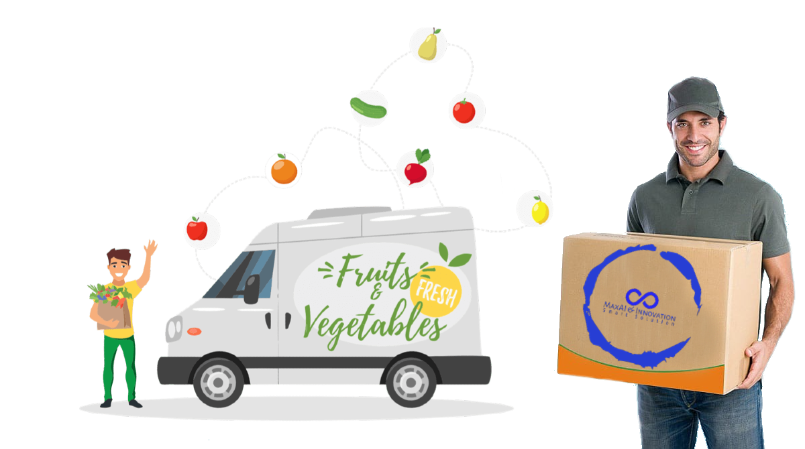

Vi är stolta över att erbjuda Sveriges färskaste och mest utsökta frukter , levererade direkt till din dörr inom kortast möjliga tid!
🍎 **Äpplen:** Knapriga och saftiga äpplen från våra lokala odlingar är inte bara en smakupplevelse utan också en källa till viktiga näringsämnen och antioxidanter för din hälsa.
🍌 **Bananer:** Våra bananer är inte bara fyllda med energi och näringsämnen utan kommer också från hållbara odlingar, vilket gör dem till ett val som är bra för både dig och planeten.
🍊 **Apelsiner:** Saftiga och fulla av C-vitamin är våra apelsiner perfekta för att ge dig den uppiggande energikicken du behöver för att starta dagen på rätt sätt.
🍇 **Druvor:** Våra druvor är inte bara en fest för smaklökarna utan är också laddade med antioxidanter och vitaminer som främjar din hälsa och välbefinnande.
Oavsett om du letar efter en nyttig och läcker snacks eller frukt till din favorit smoothie, så har vi något för dig!
Utforska vårt sortiment och upptäck varför våra frukter är det bästa valet för dig och din familj! 🌟